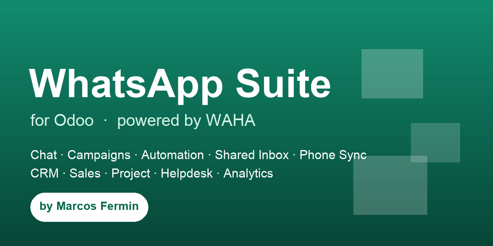

The complete WhatsApp workflow — live chat, marketing campaigns, automation, a shared inbox, phone sync and CRM / Sales / Project / Helpdesk integration — natively inside Odoo, powered by the self-hosted WAHA (WhatsApp HTTP API) engine. No per-message fees.
Odoo 17.0 · 18.0 · 19.0 Community & Enterprise
Manage multiple WhatsApp accounts. Scan the pairing QR code right inside Odoo — it auto-refreshes and flips to “Connected” on link. Works on every WAHA engine (NOWEB / GOWS / WEBJS). No need to open the WAHA dashboard.
A real-time chat client built into the backend: media & file attachments, voice notes, reactions, typing & “seen” indicators, and mention resolution — updating live over the Odoo bus.
Send text, files and voice messages from a contact, a chatter button on leads / orders / tickets, or a dedicated wizard. Message templates with {{1}} variables auto-fill from the record.
Mass messaging with throttling, scheduling and opt-out. Pick recipients from selected contacts or a saved filter, personalize with templates, and track every recipient (queued → sent → delivered → read → failed).
A native “Send WhatsApp” server action for Odoo Automation Rules — fire a templated message on any trigger (sale order confirmed, invoice posted, stage change…) to the record’s contact.
Keyword & regex rules with business-hours windows. Reply from a template or text, attach images / files / audio, opt the contact out (STOP), add tags, assign the conversation, or create a CRM lead / Helpdesk ticket automatically.
A team Inbox (kanban / list) of conversations with assignment and Open / Pending / Resolved status, fed live from incoming messages. Reusable quick replies with shortcuts for the composer.
Import the phone’s contact book and full chat history into Odoo — on demand or as a background job that imports a few chats at a time. Idempotent and resumable; imported messages keep their original timestamps.
WhatsApp smart buttons and message counts on leads, orders, tasks and tickets. Turn an incoming message into a lead or ticket in one click; outbound messages are logged into the record’s chatter.
Graph & pivot dashboards for message volume (by direction, status, session, date) and campaign performance (sent / delivered / read / failed per campaign).
Multi-company support, dedicated User / Manager security groups, webhook management, and robust concurrency handling for high-volume inbound traffic.
A companion module adds a WhatsApp smart button on Helpdesk tickets and one-click ticket creation from chats. Auto-installs when Helpdesk is present. Sold separately.
Odoo apps and custom development. Need customization, onboarding or a feature added? Message me on WhatsApp.
Licensed under OPL-1 · © Marcos Fermin